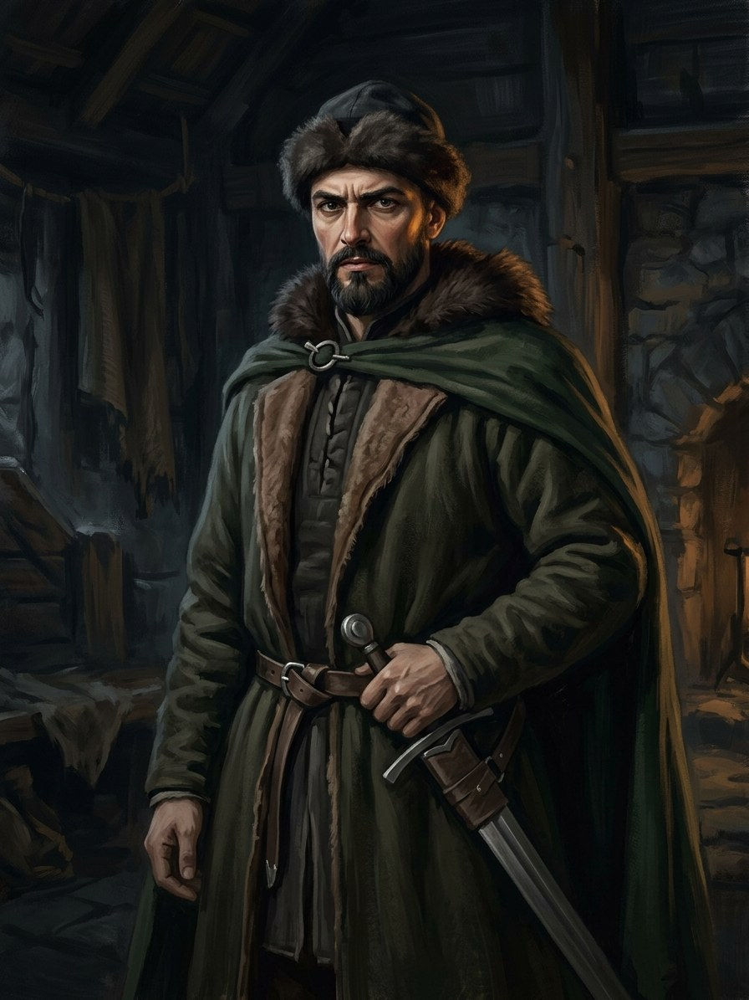

Mykolas Žygimantaitis¶
Summary¶
Mykolas Žygimantaitis, son of Žygimantas Kęstutaitis, commands the Lithuanians at Pabaiskas in 1435 (with about 4,000 Poles under Jakub Kobylański).
Mykolas Žygimantaitis

Mykolas Žygimantaitis · character¶
Tipas |
veikėjas |
Metai |
c. ?–1452 |
Status |
Istoriniai duomenys |
Pastaba |
Žygimantas Kęstutaitis’s son; commander of the Lithuanians at Pabaiskas (1435); pretender against Casimir after 1440; died in Moscow shortly before 10 Feb 1452. Birth year unknown. |
Appearance & tells¶
Žygimantas’s patient son, a man who learned „exactly what his father wanted to shield him from“. He rows in silence, laughs once and briefly through his nose, bows as courtesy demands, and eats from the common bowl at his father’s table without comment, a custom his father loves him for (Book V ch. 8, 18). His men at Pabaiskas wear cherry-red cloaks („vyšniniai apsiaustai“). His look when his father speaks to the walls is not anger or insult but patience, „the patience of children who have watched a father talk to walls“ (ch. 18).
Want · Need · Lie · Truth¶
Want (external) |
The Grand Duchy of Lithuania as his father’s heir: after 1440 to hold the throne against Casimir, and later to take Kyiv. |
Need (internal) |
To be trusted by the father who trusts no one, and to rule without his paranoia. |
Lie they believe |
A Kęstutaitis can only rule by arms and by the Crown’s help: legitimacy comes from being the last of the line. |
Truth they learn (or refuse) |
Refused: the last male Kęstutaitis dies in Moscow in 1452, captured and perhaps poisoned. |
Arc by book¶
Book V (1432-1450). Rows his father on the lakes during the summer plot (ch. 8); stands at the gate of the Ašmena inn on the night of the coup while his father, passing, touches his shoulder (ch. 9); commands the Lithuanians at Pabaiskas (1 Sep 1435) with about 4,000 Poles, where Pilkoji holds a marsh against his horse for a day and a week and then lets go (ch. 13); leads out the garrison of Ukmergė (ch. 16); eats at his father’s table in the castle of paranoia (ch. 18); after 1440 he is only a rumour: Masovia, Moscow, or hiding in Samogitia (ch. 23).
Afterwards (record only). He contests the throne with Casimir, takes Kyiv with the Crimean khan in 1448-49 and dies a prisoner in Moscow in 1452.
Power & magic¶
Tier 0, no gift. As a Gediminid he is protected by the Pact’s oldest rule: the wolves may not shed Gediminid blood, and at Pabaiskas men on both sides sit down on the field and are not struck (Book V ch. 13). His victory is carried partly by the bog that Pilkoji holds and then releases, not by his own power.
Record vs saga¶
[Historical record]: VLE; en.wikipedia (Battle of Wiłkomierz): commander at Pabaiskas; after 1440 contested the throne against Casimir (Trakai voivodeship and Samogitia backed him 1440-41, Masovia until 1447); in 1448-49 with the Crimean khan took Starodub, Novhorod-Siverskyi and Kyiv; captured, died in Moscow shortly before 10 Feb 1452, poisoning suspected, buried in Vilnius cathedral. Birth year unknown.
[The saga’s invention]: Rumours in Book V ch. 23 put him in Mozūrija, Moscow, or hiding in Samogitia.
Tarimas¶
MY-ko-las · IPA /ˈmʲiːkoɫɐs/ · English sound-alike „MEE-koh-lahs“. Compare Mykolinės (Michaelmas, „MEE-koh-lih-nays“). Patronymic Žygimantaitis: ži-gi-man-TAI-tis („zhee-gih-mahn-TYE-tis“).
Appearances¶
Book V: ch. 8, 9, 10, 13 (Pabaiskas), 15, 16, 18, 23 and the afterword.
He does not appear in Books I-IV or VI. Not to be confused with Mykolas Kęsgaila (Samogitian elder, Book V ch. 3, 17, 23, 26) or with the altar of St Michael where Vytautas is buried.
Ryšiai
Child of: Žygimantas Kęstutaitis
Took part in: Battle of Pabaiskas — Commander of the Lithuanians.
Chronologija¶
Year |
Event |
Book |
|---|---|---|
1435-09-01 |
V · Vilko Palikimas |
Sąsajos¶
graph LR
ev_pabaiskas["Battle of Pabaiskas"]
mykolas["Mykolas Žygimantaitis"]
zygimantas["Žygimantas Kęstutaitis"]
mykolas -->|Took part in| ev_pabaiskas
zygimantas -->|Parent of| mykolas
style mykolas stroke-width:3px